Resource Management
How does an operating system maximise the use of resources?
- The Operating System (OS) is responsible for managing the computer’s hardware efficiently to ensure the system runs smoothly.
- This is known as resource management and is vital for:
- Maximising performance
- Reducing bottlenecks
- Ensuring multitasking works correctly
- When a computer is switched on, the BIOS (stored in ROM) runs a bootstrap program.
- This loads the kernel and essential parts of the OS from the hard disk or flash storage into main memory (RAM).
- On tablets and smartphones, flash memory contains a read-only section for the OS and a second section for apps and user data.
- RAM is then used to execute apps and store active data.
Kernel
- The kernel is the core of the OS responsible for managing:
| Area | Responsibility |
|---|---|
| Process management | Schedules processes, allocates CPU time, handles multitasking |
| Memory management | Allocates RAM to processes, handles virtual memory, prevents clashes |
| Device management | Controls input/output devices using device drivers |
| Interrupt handling | Deals with interrupts from hardware (e.g. DMA controller or I/O devices) |
| File management | Handles reading/writing from files and file systems |
CPU resource management – scheduling
- The OS maximises CPU usage through scheduling, which allows multiple processes to be managed efficiently.
- Multitasking ensures that the CPU switches rapidly between processes.
- Different scheduling algorithms (e.g. round robin, shortest job first) are used to share CPU time fairly.
- Scheduling = managing the processes running on the CPU (a standard OS term).
Memory resource management
- RAM is allocated dynamically to active programs and system processes.
- If RAM is full, the OS may use virtual memory on disk to simulate extra memory.
- This allows more programs to run than would otherwise fit in RAM.
Input/output management and DMA
- I/O devices are much slower than the CPU, so the OS optimises their use.
- I/O operations are managed through device drivers and interrupts.
- The Direct Memory Access (DMA) controller allows data transfer between memory and devices without CPU involvement.
- This frees up the CPU to perform other tasks while data is being moved.
- When the transfer is complete, the DMA sends an interrupt to the CPU.
| Device | Typical data rate |
|---|---|
| Keyboard | ~50 bps |
| Mouse | ~120 bps |
| Laser printer | ~1 Mbps |
| Hard disk | ~100 Mbps |
Hiding hardware complexity
- The OS provides a user-friendly interface and handles the complexity of interacting with hardware.
- GUIs make tasks like file transfers easy (e.g. drag-and-drop instead of command-line).
- Device drivers handle communication with specific hardware.
- Users don’t need to know technical commands; the OS abstracts this complexity.
How the user interface hides complexity ★
Real exam questions have asked for benefits of a user interface and ways in which hardware complexity is hidden. The marking points below are taken directly from the mark schemes:
- Provision of a User Interface // Graphical User Interface — the user interacts with the computer in a more intuitive way; icons and menus are used to control devices by simply ‘pointing and clicking’.
- Device drivers — makes it easier to control peripherals such as printers within the operating system rather than on the separate device itself.
- Device mapping — different devices (physical and virtual) are easy to identify on the network, check their status, or use.
- The user interacts only with the Application / top layer (of the TCP/IP protocol suite), leaving the lower layers and their complexities hidden from the user.
- The user interface hides the complexities of the computer hardware/operating system from the user; complex commands involving memory locations/buses/computer hardware are avoided.
- It provides appropriate access systems for users with differing needs.
- Valid examples: clicking on an icon rather than writing code; using a graphical user interface / icons for navigation.
How the command line interface hides complexity ★
- The user types commands and the shell converts them into system calls, so memory addresses, registers and device registers are never handled directly.
Summary: resource to technique
| Resource | Technique used |
|---|---|
| CPU | Scheduling, multitasking, process control |
| Memory | Allocation, paging, virtual memory |
| I/O | Interrupts, DMA, buffering, driver management |
| User interface | Abstracts complexity through GUI and system utilities |
| Storage | File system management, read/write optimisation via caching and buffering |
A scheduling routine determines how processes are managed by the operating system.
(a) Identify two scheduling routines. [2]
(b) Describe two ways in which the complexities of the computer hardware are hidden from the user. [4]
Answer
4(a) One mark per scheduling routine (Max 2) from:
- Round robin
- Shortest job first
- First come first served
- Shortest remaining time
4(b) One mark for identification and one mark for a description (Max 4); Two from:
- Provision of a User Interface // Provision of a Graphical User Interface [1]
- Allows the user to interact with the computer in a more intuitive way // Icons and menus are used to control devices by simply ‘pointing and clicking’ [1]
- Use of device drivers [1]
- Makes it easier to control peripherals such as printers within the operating system of the computer rather than on the separate device itself [1]
- Device mapping [1]
- Different devices (physical and virtual) are easy to identify on the network, check their status, or use [1]
- The user interacts only with the Application / top layer (of the TCP/IP protocol suite) [1]
- leaving the lower layers and their complexities hidden from the user [1]
(a) A student buys a new computer. State one benefit to the student of a user interface and give an example. [2]
(b) Two of the process states are the running state and the ready state. Identify one other process state. [1]
© Outline conditions under which a process could change from the running state to the ready state. [2]
Answer
7(a) One mark for a benefit (Max 1) e.g.
- MP1: The user interface hides the complexities of the computer hardware/operating system from the user
- MP2: It provides appropriate access systems for users with differing needs
- MP3: Complex commands involving memory locations/buses/computer hardware/ are avoided
One mark for a valid example (Max 1) e.g.
- Clicking on icon rather than writing code
- Using a graphical user interface / icons for navigation
7(b) Blocked (state)
7© One mark per mark point (Max 2)
- MP1: When the time slice of the running process expires (round robin).
- MP2: …and there is a process with a higher priority in the ready queue, the running process is pre-empted
- MP3: When an interrupt arrives at the CPU, (the process running on the CPU gets pre-empted).
Process Management
What is multi-tasking?
Purpose of multi-tasking ★
- Multi-tasking enables multiple programs/processes to be executed at the same time.
- It runs multiple processes concurrently, which benefits process management by allowing more tasks to complete than would be the case if they had to run one task after another.
- In reality, the CPU can only execute one instruction at a time.
- It can process billions of instructions per second, and can switch between tasks so quickly that it gives the illusion of programs running simultaneously.
- The OS splits tasks and allocates system resources based on a priority.
How multi-tasking is implemented efficiently ★
- The operating system monitors the state of each task/process.
- It uses scheduling to ensure hardware resources are used efficiently.
- It makes sure that tasks/processes do not clash.
- Processor time / common hardware and resources are shared between tasks.
- One task of a higher priority can interrupt another task that is currently running.
What is a process?
- A process is a program in execution.
- This includes:
- The program code
- Current data
- Register values
- Memory space
- Each running application is treated as a separate process by the OS.
- A process does not always run continuously; it changes state depending on what it is doing and whether it has access to the CPU or is waiting for something.
The process states: running, ready and blocked
| State | Description |
|---|---|
| Running | CPU time has been allocated and the process is being executed. |
| Ready | The process is waiting (in the ready queue) for a slice of CPU time. It could run. // It has been displaced by a higher priority process and could otherwise still run. |
| Blocked | The process is waiting for an I/O operation / some event to take place / be completed. |
Process state transitions ★
- Ready → Running — the scheduler selects the process and allocates the CPU to it.
- Running → Ready — the time slice of the running process expires (round robin); a process with a higher priority in the ready queue pre-empts it; an interrupt arrives at the CPU and the running process is pre-empted.
- Running → Blocked — the process requests I/O or waits for an event it cannot continue without.
- Blocked → Ready — the I/O or event completes, so the process rejoins the ready queue.
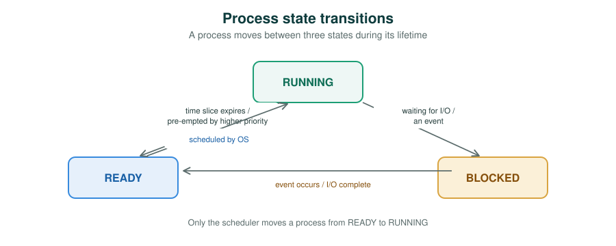
The management and scheduling of processes are tasks carried out by an operating system.
(a) Identify three process states. [3]
(b) Describe the function of the shortest job first scheduling routine and give a benefit of this routine. [4]
Answer
5(a) One mark per point
- Running state
- Ready state
- Blocked state
5(b) One mark per mark point (Max 3)
- MP1: The processes are queued as they arrive
- MP2: The process with the shortest time to complete/burst time is selected first and executed
- MP3: The process will continue until complete or put in a waiting state once execution has begun // it is non-pre-emptive
- MP4: The scheduler will continue to choose shorter processes over longer processes if they continue to be added to the queue can cause starvation for longer jobs
One mark for a benefit (Max 1)
- MP5: Shorter jobs don’t have to wait for longer jobs to complete before processing // Significantly reduces the average overall waiting time for processes // Ensures starvation doesn’t occur for process with shorter burst times
- MP6: Higher throughput of processes
(a) State the purpose of multi-tasking. [1]
(b) Explain how an operating system ensures that multi-tasking operates efficiently. [3]
Answer
5(a) To enable multiple programs/processes to be executed at the same time
5(b)
- The operating system monitors the state of each task/process
- Using scheduling to ensure hardware resources are used efficiently
- And making sure that tasks/processes do not clash
(a) Describe what is meant by multi-tasking and how it benefits process management. [2]
(b) Explain the function of the shortest remaining time scheduling routine and give a benefit of this routine. [4]
Answer
8a MP1: Running multiple processes concurrently MP2: … which benefits process management by allowing more tasks to complete than would be the case if they had to run one task after another
8b Function (max 3):
- MP1: The processes are queued as they arrive
- MP2: Processes with the shortest burst time are executed first
- MP3: It is a pre-emptive scheduling function // When a process with a shorter burst time arrives the existing process is replaced by the shorter process
- MP4: The scheduler will continue to choose shorter processes over longer processes if they continue to be added to the queue can cause starvation for longer jobs
Benefit (max 1):
- MP5: Processes with a short burst time are processed very quickly
- MP6: Waiting time is minimised
Scheduling Routines
What is scheduling?
- Deciding which tasks to process, for how long, and in what order is achieved through scheduling algorithms.
- A CPU is responsible for processing tasks as fast as possible.
- Different algorithms are used to prioritise and process tasks that need CPU time.
- The algorithms have different uses, benefits and drawbacks.
Why scheduling is needed ★
Real mark schemes accept the following reasons:
- Process scheduling allows more than one program/task to appear to be executed at the same time / enables multi-tasking / multiprogramming / multiprocessing.
- To allow high priority jobs to be completed first / ensures jobs are completed in order of priority.
- To keep the CPU busy all the time / minimise CPU idle time.
- To ensure that all processes execute efficiently.
- To give reduced wait times for all processes / ensure fair access to the CPU / prevent starvation of some processes.
- To ensure all processes are executed in a timely manner.
Scheduling categories
- Pre-emptive: allocates the CPU for time-limited slots.
- Allocates the CPU for a specific time quantum to a process.
- Allows interruption of processes currently being handled.
- It can result in low-priority processes being neglected if high-priority processes arrive frequently.
- Example algorithms include Round Robin and Shortest Remaining Time First.
- Non-pre-emptive: allocates the CPU to tasks for unlimited time slots.
- Once the CPU is allocated to a process, the process holds it until it completes its burst time or switches to a ‘waiting’ state.
- A process cannot be interrupted; it keeps the CPU until it terminates or blocks while waiting for I/O or an event.
- If a process with a long burst time is running, shorter processes will be neglected.
- Example algorithms include First Come First Served and Shortest Job First.
Scheduling algorithms
Round robin (RR)
- RR is a pre-emptive scheduling algorithm; it distributes processor time equally amongst all processes.
- Each process is given a time quantum (a fixed time slice) to execute; processes that are ready are queued.
- If a process hasn’t been completed by the end of its time quantum, it will be moved to the back of the queue.
- When a time slice ends, the status of the process is saved/queued so it can continue from where it left off in its next time slice.
- The next process is executed for its time slice; its previous state is reinstated/restored, if applicable.
- If a process completes within its time slice, the next process is executed for its time slice.
- Benefits: reduces average response time by limiting each process to a fixed amount of time; no issue with starvation because every process gets a fixed time slice each cycle.
- Drawbacks: choosing the right time quantum can be difficult; high turnaround and waiting time for long processes.
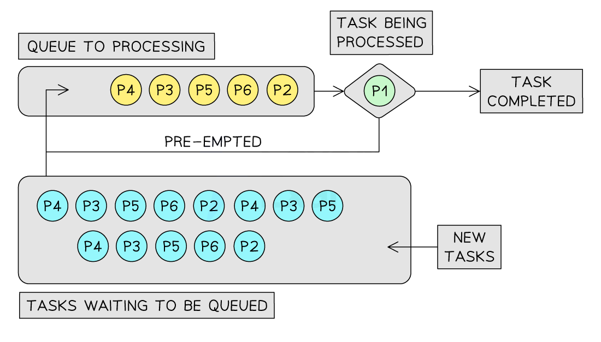
Round robin scheduling algorithmFirst-Come-First-Served (FCFS)
- FCFS is non-pre-emptive, prioritising processes that arrive at the queue first.
- No complex logic: each process request is queued as it is received and executed one by one.
- The process currently being worked on will block all other processes until it is complete.
- All new tasks join the back of the queue.
- Benefits: simple; starvation does not occur (every process eventually gets a chance to run); less processor overhead.
- Drawbacks: poor performance if a long process arrives before shorter processes; high-priority tasks wait for their turn.
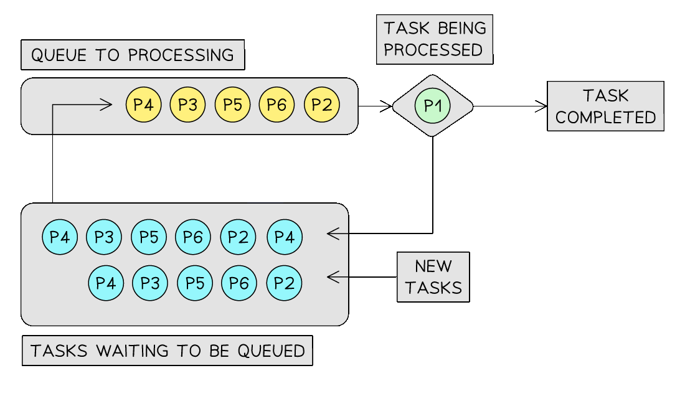
First-Come-First-Served scheduling algorithmMulti-Level Feedback Queues (extension — not required by the 9618 syllabus)
- MLFQ is a pre-emptive priority algorithm where shorter and more critical tasks are processed first.
- Multiple queues are used so that tasks of equal size are grouped together.
- All processes join the highest priority queue but trickle down to lower priority queues if they exceed the time quantum.
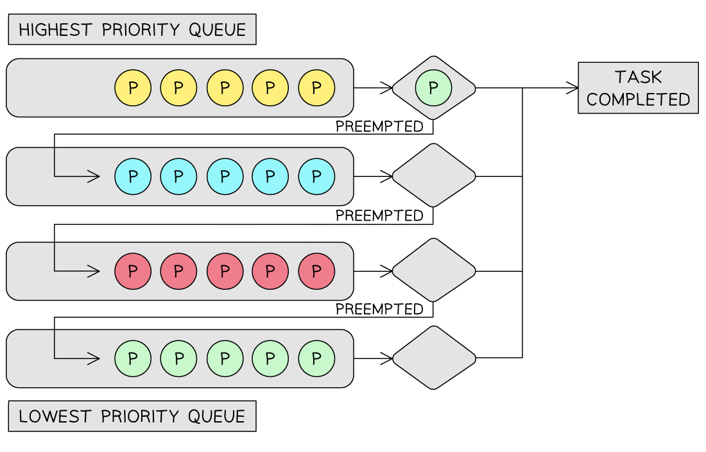
Multi-Level Feedback Queue scheduling algorithmShortest Job First (SJF)
- SJF is non-pre-emptive, where all processes are continuously sorted by burst time from shortest to longest.
- The processes are queued as they arrive; the process with the shortest time to complete / burst time is selected first and executed.
- The process will continue until complete, or be put in a waiting state once execution has begun.
- When new processes arrive on the queue, they are prioritised based on their burst time in the next cycle.
- If shorter processes continue to be added to the queue, the scheduler keeps choosing them over longer processes, which can cause starvation for longer jobs.
- Benefits: shorter jobs do not wait for longer jobs; significantly reduces average waiting time; higher throughput.
- Drawbacks: requires knowing the burst time in advance.
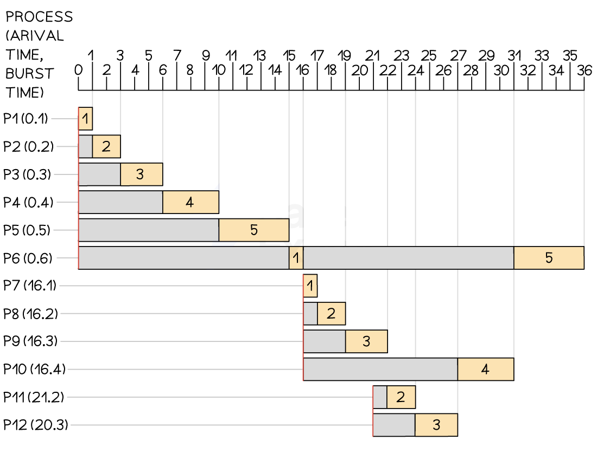
Shortest job first scheduling algorithmShortest Remaining Time First (SRTF)
- SRTF is the pre-emptive version of SJF: processes with the shortest remaining time have higher priority.
- Processes are queued as they arrive and those with the shortest burst time are executed first.
- When a process with a shorter burst time arrives, the currently running process is pre-empted and replaced by the shorter process. (This pre-emption on arrival — not merely the expiry of a time quantum — is what distinguishes SRTF from SJF.)
- Before the next cycle starts, all processes are inspected and ordered by the shortest remaining time to complete.
- Continued arrival of shorter processes can cause starvation for longer jobs.
- Benefits: processes with a short burst time are processed very quickly; waiting time is minimised.
- Drawbacks: requires knowing the burst time in advance; high context-switching overhead due to pre-emption.
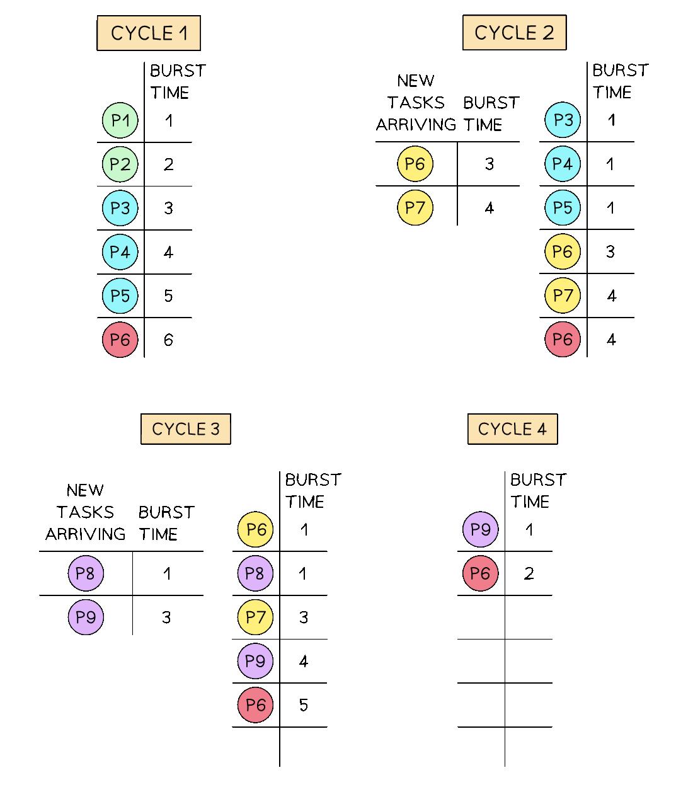
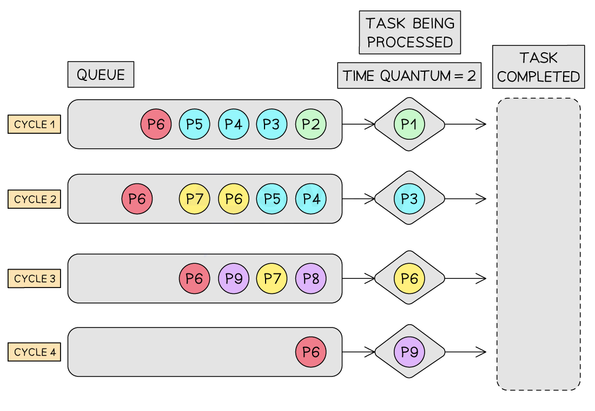
Shortest remaining time first scheduling algorithmSummary of scheduling algorithms
| Algorithm | Benefits | Drawbacks |
|---|---|---|
| Round Robin | All processes get a fair share of the CPU Good for time-sharing systems Predictable, as every process gets equal time |
Choosing the right time quantum can be difficult This can lead to a high turnaround time and waiting time for long processes |
| First Come, First Served | Simple and easy to understand Fair in the sense that processes are served in the order they arrive |
This can lead to poor performance if a long process arrives before shorter processes High-priority tasks wait for their turn in the queue |
| Shortest Job First | Minimises waiting time Efficient and fast for short processes |
Requires knowing the burst time of processes in advance Long processes can starve if short processes keep arriving |
| Shortest Remaining Time | Ideal for jobs that have shorter burst times It is pre-emptive, so it can be aligned with CPU for best performance (time quantum) |
Like SJF, it requires knowing the burst time of processes in advance High context switching overhead due to pre-emption |
| Multi-Level Feedback Queues | Smaller tasks are prioritised Creates a prioritisation system where similar-sized tasks are queued together |
More complex than other algorithms Setting the correct parameters (e.g., number of queues, ageing rules) can be complex |
- The suitability of a scheduling algorithm largely depends on the specific scenario and the system requirements.
- A drawback in one scenario may not be a drawback in another.
(a) Explain the need for scheduling in process management. [3]
(b) Describe these scheduling routines and identify a benefit for each one. [6]
Shortest job first
Round robin
First come first served
Answer
9(a) One mark for each point (Max 3)
- Process scheduling allows more than one program/task to appear to be executed at the same time / enables multi-tasking / multiprogramming.
- To allow high priority jobs to be completed first.
- To keep the CPU busy all the time
- … to ensure that all processes execute efficiently
- … and to have reduced wait times for all processes / to ensure all processes have fair access to the CPU / prevent starvation of some processes.
9(b) One mark for each point (Max 2) for Shortest job first:
- Process are executed in ascending order of the amount of CPU time required // Short processes are executed first and followed by longer processes.
- …which leads to an increased throughput (because more processes can be executed in a smaller amount of time).
One mark for each point (Max 2) for Round robin:
- Each process is served by the CPU for a fixed time/time slice (so all processes are given the same priority).
- Starvation doesn’t occur (because for each round robin cycle, every process is given a fixed time/time slice to execute).
One mark for each point (Max 2) for First come first served:
- No complex logic, each process request is queued as it is received and executed one by one.
- Starvation doesn’t occur (because every process will eventually get a chance to run) // less processor overhead.
The management and scheduling of processes are tasks carried out by an operating system.
(a) Describe one reason why scheduling is necessary in process management. [2]
(b) Explain the function of the round robin scheduling routine and give a benefit of this routine. [4]
Answer
6(a) One mark for each mark point (Max 2)
- Process scheduling is required to ensure that all processes are executed in a timely manner
- … and enables multitasking/multiprogramming/multiprocessing
- … to minimise CPU idle time
- … to ensure that no process is starved of resources. // … to ensure fair access to resources.
- … ensures jobs/processes are completed in order of priority.
6(b) One mark for each mark point (Max 3)
- MP1 Processes are queued as they arrive.
- MP2 It is a pre-emptive scheduling routine.
- MP3 A fixed time quantum is given to each process. // Each process has an equal time slice.
- MP4 When a time slice ends, the status of the process is saved/queued so it can continue from where it left off in its next time slice.
- MP5 and the next process is executed for its time slice; its previous state is reinstated/restored, if applicable.
- MP6 If a process completes within its time slice, the next process is executed for its time slice.
One mark for benefit (Max 1)
- MP7 Reduces average response time by limiting each process to a fixed amount of time.
- MP8 No issue with starvation of resources.
Interrupt Handling & Kernel
What is the interrupt handling process?
- Interrupt signal occurs (e.g. input from keyboard, DMA completion, timer).
- Current process is paused and its state is saved (registers, PC, etc.).
- The kernel identifies the source and priority of the interrupt.
- The appropriate Interrupt Service Routine (ISR) is called.
- Once complete, the original process is restored and resumed.
Interrupt handling = transferring control to another routine when a service is required (a standard OS term).
Kernel as an interrupt handler ★
- The kernel receives a signal when an interrupt is generated.
- The kernel checks the priority and reviews the status/priority of the current interrupts.
- The system enters kernel mode if the type of interrupt is of higher priority than the current process.
- The kernel consults the interrupt dispatch table / IDT.
- It saves the state of the interrupted process / contents of the registers on the kernel stack.
- The kernel restores the process state, e.g. contents of registers, once the interrupt is serviced.
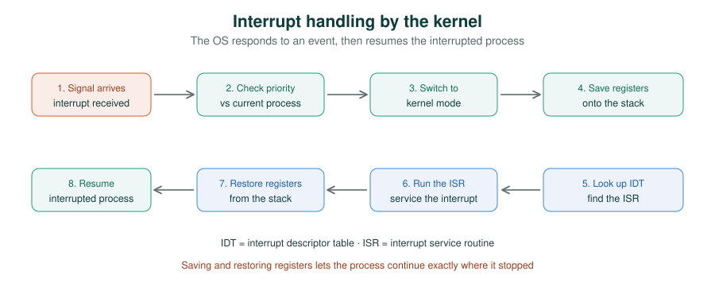
Low-level scheduling via interrupts
- Interrupts are essential for the OS to perform low-level scheduling, which involves:
| Interrupt Type | Scheduling Role |
|---|---|
| Timer Interrupts | Used to trigger a context switch between processes, supporting pre-emptive multitasking |
| I/O Interrupts | Signals that an I/O task (e.g. file write, printer job) has finished — unblocks waiting processes |
| Hardware Interrupts | Responds to urgent external events (e.g. power failure, mouse input) |
| Software Interrupts | Generated by programs to request system-level services (e.g. memory allocation) |
- The scheduler, which is part of the kernel, uses these interrupts to decide which process should run next, often based on a priority or time slice system.
How interrupt handling is used in low-level scheduling ★
- The low-level scheduler manages the handling of interrupts based on priority, ensuring that critical events are handled without delay.
- It uses an Interrupt Vector Table (IVT) / Interrupt Descriptor/Despatch Table (IDT) / Interrupt Service Routine (ISR) lookup to map the interrupt to the specific handling routine / ISR.
(a) The kernel is the central component of an Operating System (OS). Outline how the kernel of an OS acts as an interrupt handler. [2]
(b)(i) State what is meant by the term multi-tasking in an Operating System. [1]
(b)(ii) Describe how multi-tasking is implemented in an Operating System. [2]
Answer
9(a) One mark per mark point (Max 2)
- the kernel receives a signal when an interrupt is generated
- the kernel checks the priority and reviews the status/priority of the current interrupts
- system enters kernel mode if the type of interrupt is of higher priority than the current process
- the kernel consults the interrupt dispatch table / IDT
- … and saves the state of the interrupted process / contents of the registers on the kernel stack
- the kernel restores the process state e.g. contents of registers once the interrupt is serviced
9(b)(i) One mark per mark point (Max 1)
- multi-tasking allows computers to carry out / seem to carry out more than one process at a time
9(b)(ii) One mark per mark point (Max 2)
- processor time/common hardware and resources is/are shared between tasks
- scheduling is used to decide on the processes to be carried out to ensure multi-tasking operates correctly / efficiently / without clashes
- one task of a higher priority can interrupt another task that is currently running
(a) Describe how interrupt handling is used in low-level scheduling. [2]
(b) In process management, a process can be in one of three process states: running, ready or blocked. Complete the table to identify one reason why a process could be in each of the three states. [3]
Answer
5(a) One mark per mark point (Max 2)
- The low-level scheduler manages the handling of interrupts based on priority
- … ensuring that critical events are handled without delay
- It uses an Interrupt Vector Table (IVT) / Interrupt Descriptor/Despatch Table (IDT) / Interrupt Service Routine (ISR) lookup
- … to map the interrupt to the specific handling routine / ISR.
5(b) One mark per correct answer (Max 3)
- running: CPU time has been allocated and the process is being executed.
- ready: The process is waiting (in the ready queue) for a slice of CPU time. It could run. // It has been displaced by a higher priority process and could otherwise still run.
- blocked: The process is waiting for an I/O operation / some event to take place / be completed.
Memory Management
What is memory management?
- Memory management is a fundamental role of the operating system, dealing with the allocation and deallocation of the computer’s primary memory.
- When a user opens an application, its data is loaded from storage into active memory so that it can run smoothly.
- When a user opens a file from the file system, e.g. a word document, the CPU loads this file data, as well as application data, into the primary memory.
- Primary memory is a limited resource in the system, so it needs careful management.
- Benefits of memory management are:
- Efficient allocation of memory enables multitasking, allowing multiple programs to run at once.
- Memory management maintains security; it does not let programs access memory reserved for other programs.
- Memory management is made more efficient through 3 techniques: paging, segmentation and virtual memory.
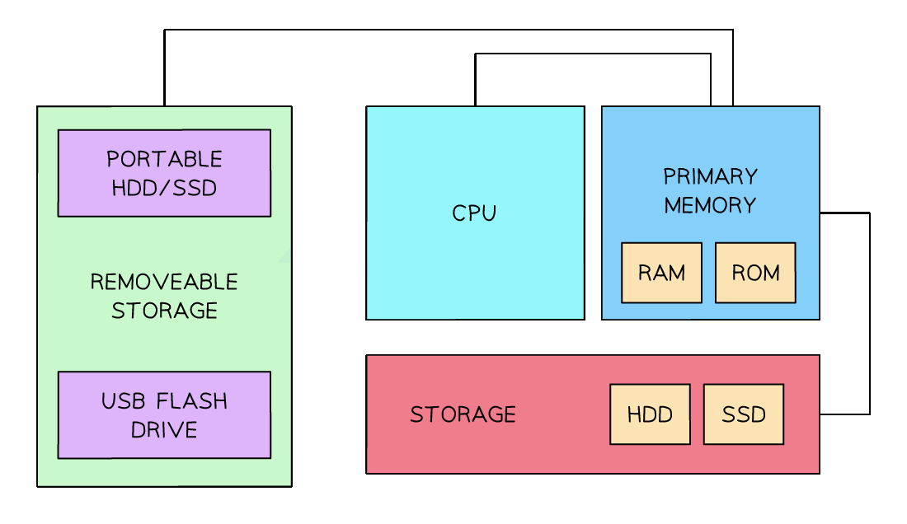
Links between different types of memory- The main benefit of memory management is to make computer systems run smoothly. As users move between applications, the OS is rapidly reallocating memory depending on the task being completed.
- Make sure you can name one benefit and one drawback for each memory management method in this revision note.
Paging and Segmentation
What is paging?
- Paging is a method of chunking the primary memory into equal-sized blocks (pages).
- When an application is launched, data is moved from the hard disk into pages for faster access.
- As users move between applications, memory is dynamically allocated: pages are taken away from applications not in active use and granted to applications that are in active use.
- Paging = reading/writing same-size blocks of data from/to secondary storage when required (a standard OS term).
- Paging can lead to internal fragmentation.
- If a 200KB file is divided into four 64KB pages, the last page holds only 8KB, leaving 56KB of unused space:
- First 64KB → Full page (64KB used, 0KB unused)
- Second 64KB → Full page (64KB used, 0KB unused)
- Third 64KB → Full page (64KB used, 0KB unused)
- Fourth 64KB → Partial page (8KB used, 56KB unused)
- Unused space in a page is wasteful because other unrelated data cannot be stored in this page. Over time, more pockets of wasted space exist across memory — this is internal fragmentation.
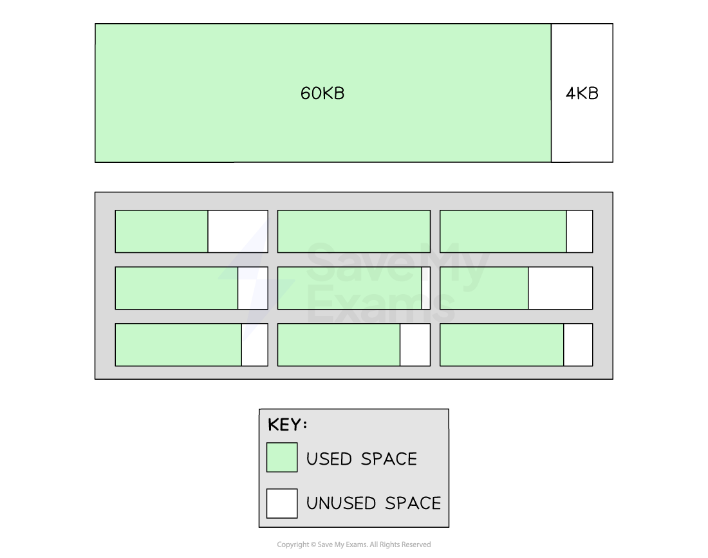
Internal fragmentationWhat is segmentation?
- Segmentation is a method of chunking memory into blocks that correspond to different types of data needed by an application (variable-sized blocks).
- A video editing application may have a segment for video data, audio data and special effects.
- Segments are not all the same size; they are sized depending on their allocated data.
- Segmentation is space-efficient due to only allocating space depending on the amount an application needs.
- Segmentation can lead to external fragmentation: as segments fill up memory, physical gaps reduce the maximum size of new segments that can be allocated.
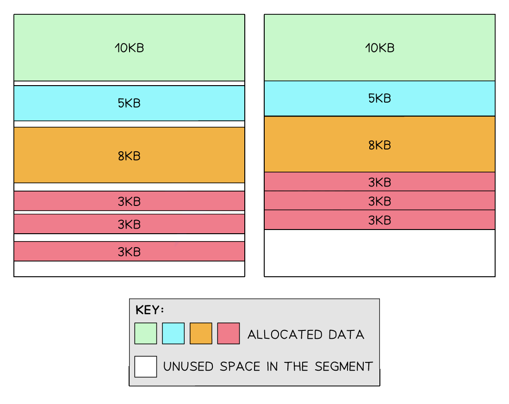
External fragmentationThe process of segmentation ★
Mark scheme points for describing segmentation for memory management:
- In segmented memory, the logical / virtual address space is broken into varying sized blocks called segments / sections.
- Each segment has a name and size.
- During execution, segments from logical / virtual memory are loaded into physical memory.
- The address is specified by the user … it contains the segment name and offset value.
- Segments are numbered … and this number is used as an index in the segment map table.
- The offset value determines the size of the segment.
- A segment map table maps logical / virtual addresses to physical addresses / contains the segment number and offset.
Page tables and address translation ★
- Page — a fixed-size block of a program; a page frame is a fixed-size block of physical memory of the same size.
- Page table — maps each page number of a process to the page frame that currently holds it, and records a present/absent bit.
- Logical address to physical address — the page number indexes the page table to give the frame number, while the offset within the page is unchanged.
- Segment table — stores the base address and the length of each segment; the offset is checked against the length before access.
The difference between paging and segmentation ★
- Paging divides memory into fixed-size blocks; segmentation divides memory into variable-sized blocks.
- The operating system divides the memory into pages; the compiler is responsible for calculating the segment size.
- Access times for paging are faster than for segmentation.
- Paging can cause internal fragmentation; segmentation can cause external fragmentation.
| Memory Management Technique | Description | Example | Benefits | Drawbacks |
|---|---|---|---|---|
| Paging | Divides memory into fixed-sized blocks (pages) | A process needing 200KB is divided into four 64KB pages, leaving 8KB used and 56KB unused in the last | Facilitates efficient memory management and enables the use of virtual memory | This can lead to internal fragmentation |
| Segmentation | Divides memory into variable-sized segments based on logical parts of a process | A video editing application may have segments for video, audio, effects and UI elements | Allows for intuitive and efficient memory access | This can result in external fragmentation |
| Virtual Memory | Uses hard drive space as an ‘extension’ of RAM | Less frequently accessed pages are moved to the hard disk when RAM is exceeded | Allows larger programs to run and facilitates effective multitasking | Slower to access than physical memory, which degrades performance if overused |
Virtual memory, paging and segmentation are used in memory management.
(a) Explain what is meant by virtual memory. [3]
(b) State one difference between paging and segmentation in the way memory is divided. [1]
Answer
8(a) One mark for each correct point (Max 3)
- Disk / secondary storage is used to extend the RAM / memory available
- … so the CPU appears to be able to access more memory space than the available RAM
- Only the data in use needs to be in main memory so data can be swapped between RAM and virtual memory as necessary
- Virtual memory is created temporarily.
8(b) One mark for a correct statement about the difference between paging and segmentation e.g.
- Paging allows the memory to be divided into fixed size blocks and Segmentation divides the memory into variable sized blocks.
- The operating system divides the memory into pages, the compiler is responsible for calculating the segment size.
- Access times for paging is faster than for segmentation.
(a) Draw one line to connect each Operating System (OS) term to the most appropriate description about it. [5]
| OS term | Description |
|---|---|
| Multi-tasking | Using secondary storage to simulate additional main memory |
| Paging | Managing the processes running on the CPU |
| Interrupt handling | Managing the execution of many programs that appear to run at the same time |
| Scheduling | Locating non-contiguous blocks of data and relocating them |
| Virtual memory | Transferring control to another routine when a service is required |
| Reading/writing same-size blocks of data from/to secondary storage when required |
Answer
3(a) One mark for each correct line from Operating System Term to Description
- Multi-tasking → Managing the execution of many programs that appear to run at the same time
- Paging → Reading/writing same-size blocks of data from/to secondary storage when required
- Interrupt handling → Transferring control to another routine when a service is required
- Scheduling → Managing the processes running on the CPU
- Virtual memory → Using secondary storage to simulate additional main memory
Unused description: Locating non-contiguous blocks of data and relocating them.
Virtual Memory, Page Replacement and Disk Thrashing
What is virtual memory?
- If a computer is running low on primary memory, it can make secondary storage act as an ‘extension’ of the main memory.
- The operating system can offload data from the primary memory into virtual memory.
- Virtual memory creates an illusion of a larger memory and enables applications to continue to multitask.
- However, accessing data in virtual memory is considerably slower compared to RAM.
- Solid-state drives are faster than traditional hard-disk drives, but neither are as fast as RAM.
- Over-reliance on virtual memory can lead to performance issues.
Why an OS may need virtual memory ★
- Virtual memory is used when RAM is running low, such as when a computer is running many processes at once.
- Virtual memory may be used for efficient use of RAM / the processor.
- Data / programs that are not immediately needed can be moved from RAM to virtual memory.
- Disk / secondary storage extends the RAM so the CPU appears to access more memory space than the available RAM; only the data in use needs to be in main memory so data can be swapped as necessary.
- Virtual memory is created temporarily.
Page replacement and disk thrashing
- Page fault — occurs when a process refers to a page that is not currently in main memory, so the OS must load it from virtual memory.
- Page replacement — the OS selects one resident page to move out so that a free page frame is available for the incoming page.
- FIFO (first in, first out) — the page that has been in memory longest is replaced first; simple, but a heavily used page can be evicted.
- LRU (least recently used) — the page that has not been referenced for the longest time is replaced first; it needs a record of page use, so it costs more to implement.
- Dirty bit — a page that has been changed must be written back to virtual memory before it is replaced.
- Disk thrashing — the OS spends more time swapping pages between RAM and virtual memory than executing useful instructions.
Circumstances in which disk thrashing occurs ★
The mark schemes for thrashing questions accept the following points:
-
Disk thrashing is a problem that may occur when virtual memory is being used / when frequent transfers between main memory and secondary memory take place.
-
As main memory fills up, more pages need to be swapped in and out of secondary / virtual memory.
-
This swapping leads to a very high rate of hard disk access / excessive disk head movements.
-
Moving a hard disk read/write head takes a relatively long time / long latency time.
-
Eventually, more time is spent swapping pages than processing data — the thrash point, which can cause the program to freeze or not run.
-
Cause — too many processes are active and the memory they need exceeds the available RAM, so pages are evicted and reloaded before they are used.
-
Symptom — continuous paging, a very high rate of disk head movement, and a sharp fall in CPU utilisation.
-
Reduction — increase RAM, reduce the number of active processes, or improve the page replacement routine.
(a) Outline the reasons why an operating system may need to use virtual memory. [2]
(b) Explain the circumstances in which disk thrashing could occur. [3]
Answer
5(a)
One mark per mark point (Max 2)
- MP1: Virtual memory is used when RAM is running low
- MP2: …such as when a computer is running many processes at once.
- MP3: Virtual memory may be used for efficient use of RAM / the processor
- MP4: …such as if data / programs are not immediately needed, they can be moved from RAM to virtual memory
5(b)
One mark per mark point (Max 3)
- MP1: Disk thrashing is a problem that may occur when frequent transfers between main memory and secondary memory take place // Disk thrashing is a problem that may occur when virtual memory is being used
- MP2: As main memory fills up, more pages need to be swapped in and out of secondary/virtual memory
- MP3: This swapping leads to a very high rate of hard disk head movements
- MP4: Eventually, more time is spent swapping the pages/data than processing the data.
(a) Describe the process of segmentation for memory management. [4]
(b) Explain what is meant by disk thrashing. [3]
Answer
8(a) One mark per mark point (Max 4)
- MP1 In segmented memory, the logical / virtual address space is broken into varying sized blocks called segments / sections.
- MP2 Each segment has a name and size.
- MP3 During execution segments from logical / virtual memory are loaded into physical memory.
- MP4 The address is specified by the user
- MP5 … it contains the segment name and offset value.
- MP6 Segments are numbered
- MP7 … and this number is used as an index in the segment map table.
- MP8 The offset value determines the size of the segment.
- MP9 A segment map table maps logical / virtual addresses to physical addresses / contains the segment number and offset.
8(b) One mark per mark point (Max 3)
- MP1 Disk thrashing is a problem that may occur when virtual memory is being used.
- MP2 As the main memory fills up, more and more pages need to be swapped in and out of virtual memory.
- MP3 This swapping leads to a very high rate of hard disk access / excessive disk head movements.
- MP4 Moving a hard disk read/write head takes a relatively long time / long latency time.
- MP5 Eventually, more time is spent swapping pages than processing data thrash point, which can cause the program to freeze or not run.
Exam Question Index
Every sub-question of the 13 §16.1 past-paper questions recorded in this note, grouped by exam point. The source column uses YYYY Season PXX QN(part) format.
Resource management and the user interface
| Sub-question | Exam point | Source |
|---|---|---|
| P31 Q4(a) | Scheduling routines (identify) | 2025 Winter P31 Q4(a) |
| P31 Q4(b) | User interface hiding hardware complexity | 2025 Winter P31 Q4(b) |
| P31 Q7(a) | User interface hiding hardware complexity | 2023 Winter P31 Q7(a) |
Process management, multi-tasking and process states
| Sub-question | Exam point | Source |
|---|---|---|
| P32 Q5(a) | Process states (identify) | 2025 Summer P32 Q5(a) |
| P32 Q5(b) | Scheduling — shortest job first | 2025 Summer P32 Q5(b) |
| P32 Q5(b) | Process states (reasons for running/ready/blocked) | 2025 Winter P32 Q5(b) |
| P33 Q5(a) | Multi-tasking (purpose) | 2025 Winter P33 Q5(a) |
| P33 Q5(b) | Multi-tasking (efficient implementation) | 2025 Winter P33 Q5(b) |
| P31 Q8(a) | Multi-tasking (benefit to process management) | 2025 Summer P31 Q8(a) |
| P31 Q8(b) | Scheduling — shortest remaining time | 2025 Summer P31 Q8(b) |
| P32 Q9(b)(i) | Multi-tasking (meaning) | 2024 Winter P32 Q9(b)(i) |
| P32 Q9(b)(ii) | Multi-tasking (implementation) | 2024 Winter P32 Q9(b)(ii) |
| P31 Q7(b) | Process states (blocked) | 2023 Winter P31 Q7(b) |
| P31 Q7© | Process states (running → ready transition) | 2023 Winter P31 Q7© |
Scheduling
| Sub-question | Exam point | Source |
|---|---|---|
| P33 Q6(a) | Need for scheduling | 2025 Summer P33 Q6(a) |
| P33 Q6(b) | Scheduling — round robin | 2025 Summer P33 Q6(b) |
| P32 Q9(a) | Need for scheduling | 2022 Winter P32 Q9(a) |
| P32 Q9(b) | Scheduling — shortest job first, round robin, first come first served | 2022 Winter P32 Q9(b) |
Kernel as an interrupt handler
| Sub-question | Exam point | Source |
|---|---|---|
| P32 Q9(a) | Kernel as interrupt handler | 2024 Winter P32 Q9(a) |
| P32 Q5(a) | Interrupt handling in low-level scheduling | 2025 Winter P32 Q5(a) |
Virtual memory, paging and segmentation
| Sub-question | Exam point | Source |
|---|---|---|
| P31 Q8(a) | Segmentation (process of segmentation) | 2024 Winter P31 Q8(a) |
| P32 Q5(a) | Virtual memory (reasons for use) | 2023 Winter P32 Q5(a) |
| P31 Q8(a) | Virtual memory (meaning) | 2022 Winter P31 Q8(a) |
| P31 Q8(b) | Paging vs segmentation | 2022 Winter P31 Q8(b) |
| P31 Q3(a) | OS terms: multi-tasking, paging, interrupt handling, scheduling, virtual memory | 2021 Summer P31 Q3(a) |
Page replacement and disk thrashing
| Sub-question | Exam point | Source |
|---|---|---|
| P31 Q8(b) | Disk thrashing (meaning) | 2024 Winter P31 Q8(b) |
| P32 Q5(b) | Disk thrashing (circumstances) | 2023 Winter P32 Q5(b) |
Note on scope: 2021 Summer P31 Q3 is a mixed question. Only part (a) tests §16.1 OS terms; part (b) tests “how an interpreter executes a program” which belongs to §16.2 Translation Software and is therefore excluded from this note. No past-paper sub-question in the §16.1 set directly tests “how pages can be replaced” (page replacement algorithms); that exam point is covered by the note text only. “How an OS can maximise the use of resources” is examined indirectly through scheduling, virtual memory and multi-tasking rather than by a standalone sub-question.